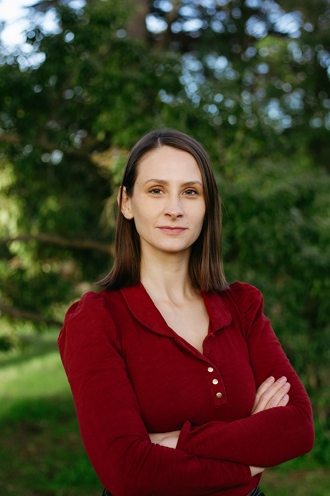

Kristen Dawson
I am a master's student at San Francisco State University advised by Serkan Hoşten graduating in May 2025. My thesis is based on Uniqueness of size-2 positive semidefinite matrix factorizations. I am applying to PhD programs to start fall 2025, and am interested in applied algebraic geometry, algebraic statistics, optimization, and combinatorics.
In my free time I enjoy reading, scuba diving, and neighborhood walks with my dog, but not all three at once.
This year, I am being supported by the ARCS Foundation.
